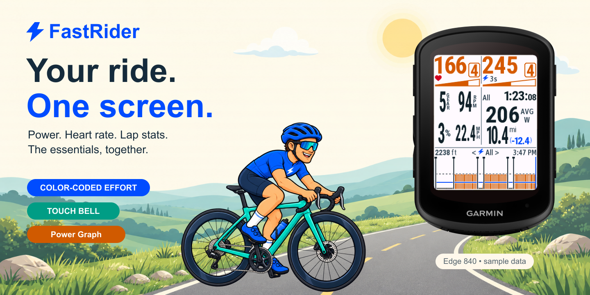
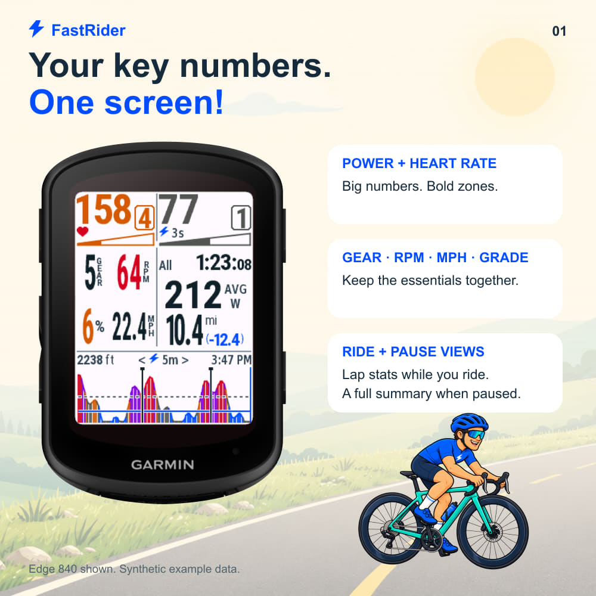
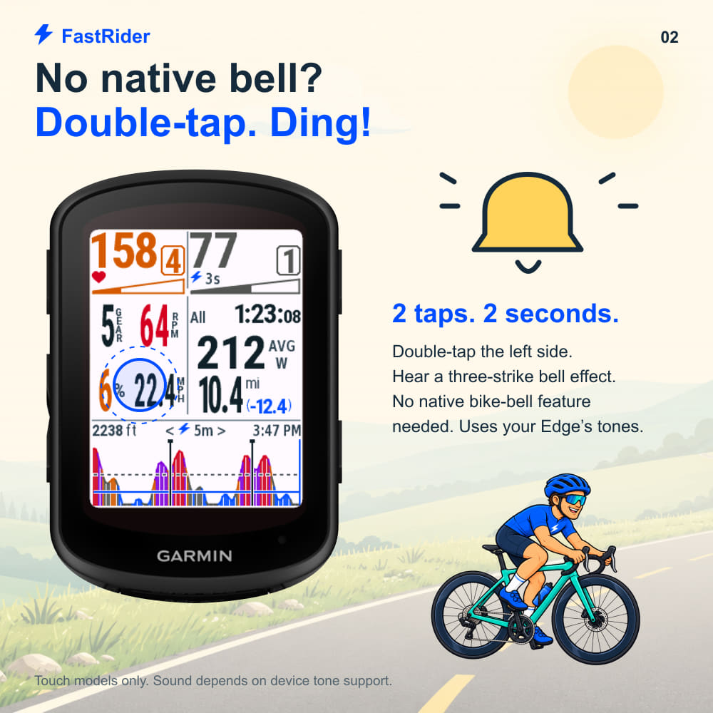
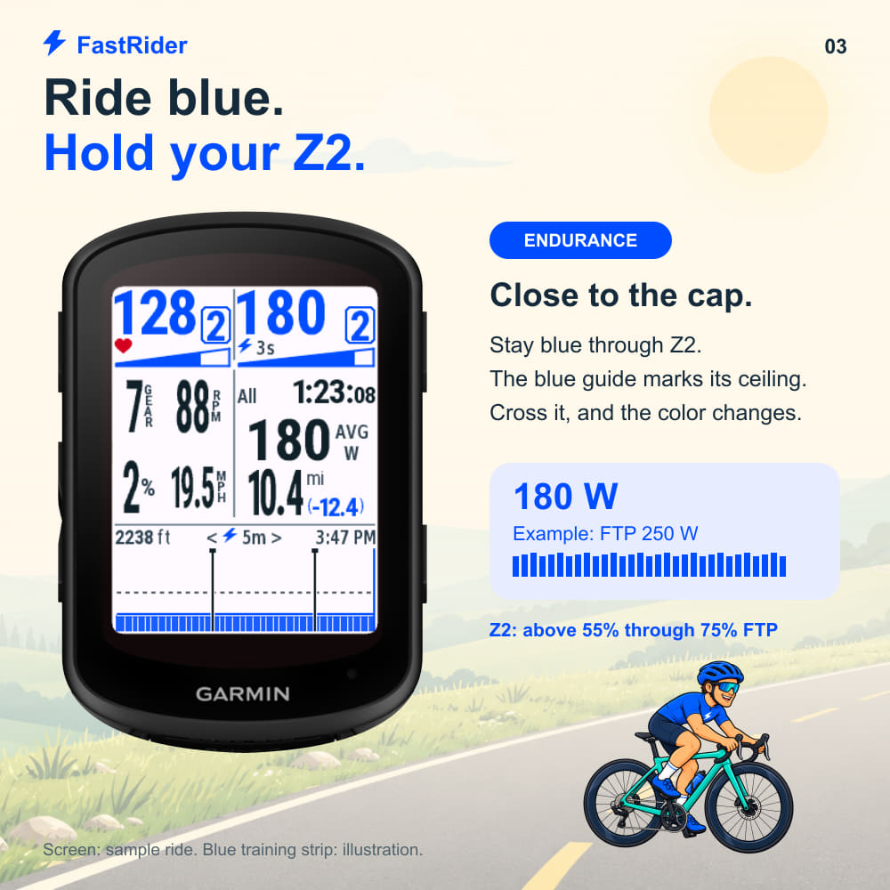
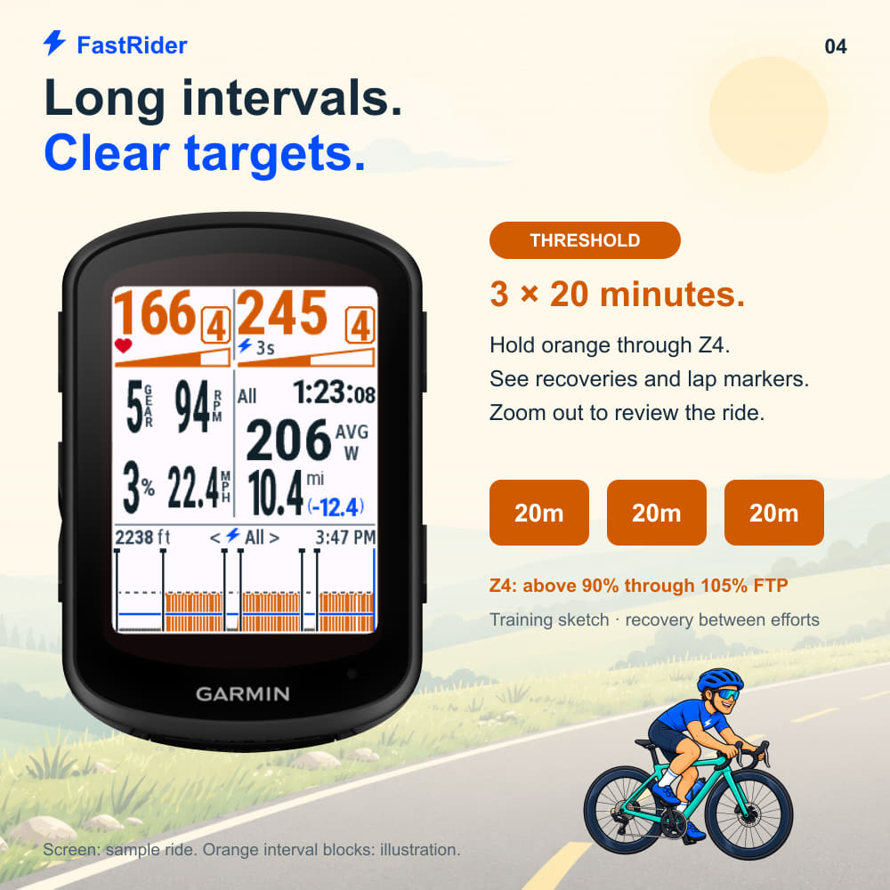
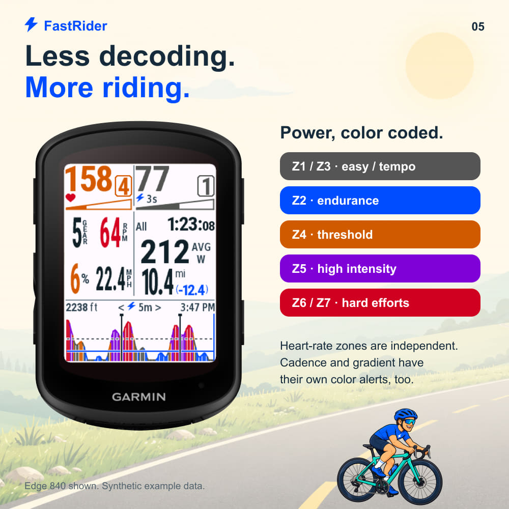
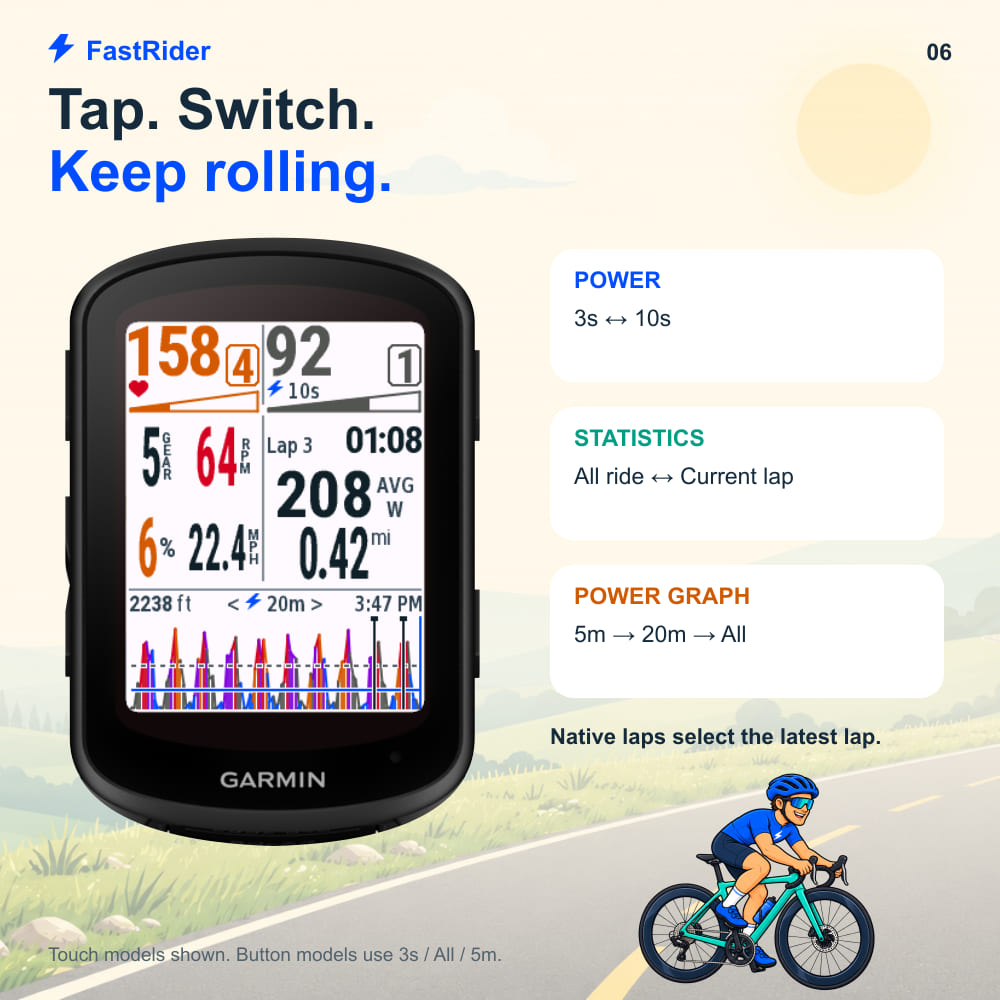
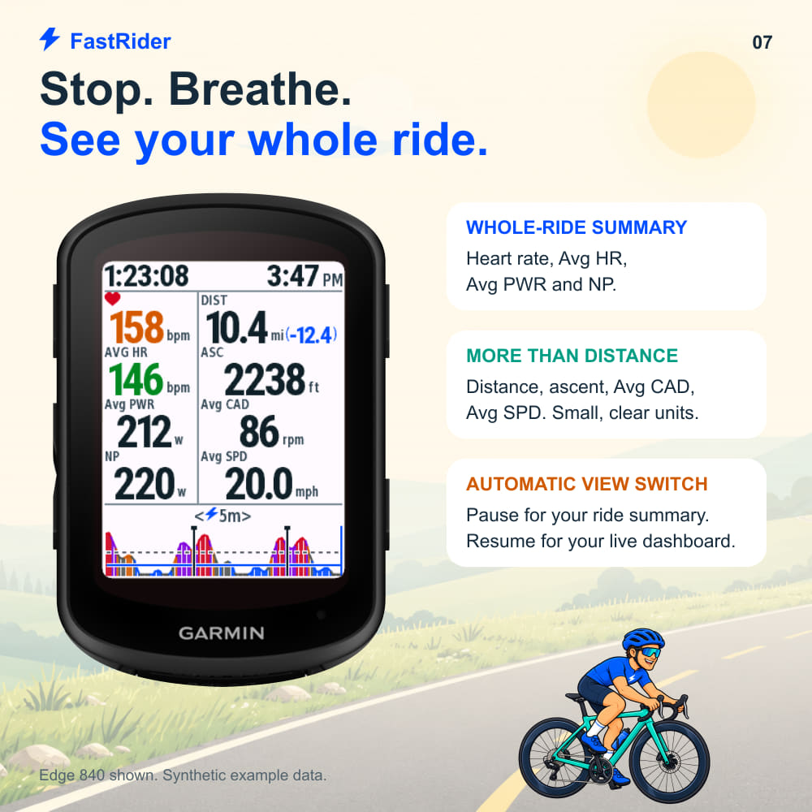
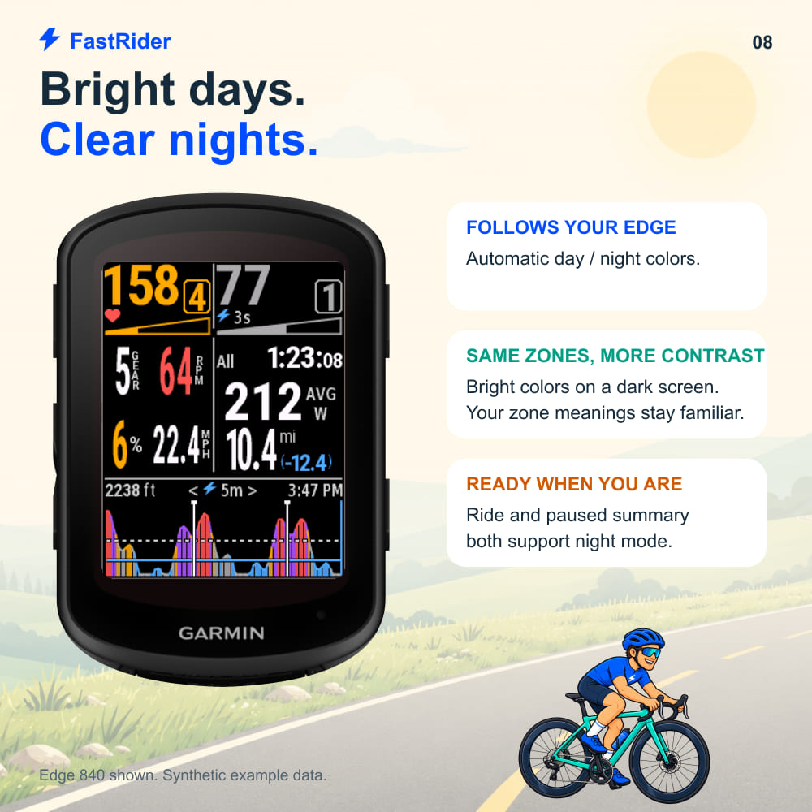

Fast Rider 0.4.13
当前界面宣传材料：公路骑手、骑行太阳镜、真实 Edge 840 机身与最新原生截图。
12 款 Edge12 张图片无需视频英文介绍 4000 字符内
填写说明 · 英文介绍 · 中文介绍 · What’s New

表单内容
| 字段 | 内容 |
|---|
| App File | FastRider-0.4.13.iq（使用同目录或Downloads中的签名IQ） |
| Title | Fast Rider |
| Category | Cycling |
| Subcategory | 如不可选则留空 |
| Collect user data? | No |
| ANT+ encode/decode? | No |
| Regional limits? | No |
| Activity types | Cycling及对应骑行子类 |
| Public support email | 沿用你已设置的公开支持邮箱 |
| Source / support | https://github.com/zhilichen/garmin-fast-rider |
| Privacy | https://github.com/zhilichen/garmin-fast-rider/blob/main/PRIVACY.md |
| Monetization | No |
| Review notifications | 沿用你的偏好 |
| Automatic migration | 建议No，新增型号后明确验收 |
| Companion / hardware URL / video | 留空 |
封面与设备图标
02-cover-500.png
03-device-icon-24-bit.png
03-device-icon-64-color.png
功能图片
按上次确认的表单上限，最多上传5张；01–05可作为基础组合，07暂停统计和08日夜模式可替换其中一张。06为点击操作备用图。

04-screen-01-one-screen.jpg · 1000×1000 · 135,862 bytes

04-screen-02-touch-bell.jpg · 1000×1000 · 140,753 bytes

04-screen-03-z2-training.jpg · 1000×1000 · 136,364 bytes

04-screen-04-threshold-intervals.jpg · 1000×1000 · 141,507 bytes

04-screen-05-color-coded.jpg · 1000×1000 · 138,977 bytes

04-screen-06-tap-controls.jpg · 1000×1000 · 135,022 bytes

04-screen-07-paused-summary.jpg · 1000×1000 · 137,549 bytes

04-screen-08-day-night.jpg · 1000×1000 · 147,072 bytes
英文介绍 3222/4000
Power, heart rate, lap stats and your ride essentials — on one screen!
Fast Rider turns your Garmin Edge into a clear, colorful cycling dashboard. Big numbers, useful power guides and a friendly touch bell keep the essentials close. Ride with live metrics; pause for a whole-ride summary.
YOUR EFFORT, COLOR CODED
Power and heart rate show numbered zone badges and tapered progress bars. The solid part shows your position inside the current zone. Power uses the same colors in the live reading and graph: blue for Z2, orange for Z4, purple for Z5, red for Z6/Z7, and gray for Z1/Z3. Heart-rate zones are independent. Cadence and gradient have their own color alerts.
POWER GRAPH: Z2 + THRESHOLD
Stay blue near the Z2 ceiling. For threshold efforts, including 3 × 20 minutes, hold orange through Z4. See the Z2 ceiling guide, FTP guide and native lap boundaries. Touch-enabled models can switch between the last 5 minutes, 20 minutes and the whole ride. The graph helps you see effort changes; it does not run or prescribe a workout.
DOUBLE-TAP. DING!
No built-in bike-bell feature? On touch models, double-tap the left side for a two-second, three-strike electronic bell effect. It uses supported Edge tones, without a companion app or separate bell feature. Sound depends on your device; this is not Garmin's native bike-bell function.
RIDE + PAUSE VIEWS
While riding: heart rate, 3s/10s power, rear gear, cadence, estimated gradient, speed, All/current-lap time, average power and distance, plus ascent, clock and power history.
When paused or stopped: elapsed time and a top-right clock; current and average heart rate, average power, locally estimated NP, total distance, ascent, average cadence and average speed. Short labels and small units keep the summary easy to scan. Remaining distance appears when Garmin supplies valid navigation-to-destination data.
DAY + NIGHT
Follows your Edge data-field background, including Garmin's automatic day/night setting. Both ride and paused views use matching high-contrast themes; power and heart-rate zone meanings stay the same.
TOUCH CONTROLS
Tap power: 3s / 10s. Tap statistics: All / current lap. Tap the graph: 5m / 20m / All. Native lap boundaries select the latest lap. Button-only Edge 530, 540 and 550 use 3s / All / 5m and the automatic paused summary, without touch controls or the electronic bell.
SETUP + DATA
Choose Fast Rider in a one-field, full-screen cycling page. Units: mi, mph, ft, bpm, w and rpm. Compatible sensors are required for power, heart rate, cadence and electronic rear gear; missing readings show dashes. Cycling profile FTP and heart-rate zones are used when available, with app-setting fallbacks.
Gradient uses altitude and distance. History and NP start when the field runs; earlier samples and future course elevation are unavailable. NP and lap average power are locally estimated and can differ from Garmin statistics. Screenshots show synthetic examples.
Free and open source. No ads, external account or developer data collection. Independent project; not affiliated with Garmin.
Source & support: https://github.com/zhilichen/garmin-fast-rider
Privacy: https://github.com/zhilichen/garmin-fast-rider/blob/main/PRIVACY.md
What’s New 390/4000
Updated for v0.4.13:
- Current time aligns to the top-right edge of the paused summary.
- Short paused-view labels, with small units beside every value.
- Larger live metrics and riding distance, plus numbered zone badges and tapered zone-progress bars.
- Automatic ride/paused summaries and day/night colors.
- Refreshed screenshots for the current UI, Z2 training and threshold intervals.
中文介绍 1130/4000
功率、心率、圈统计和骑行关键信息，同屏掌握！
Fast Rider 为 Garmin Edge 提供清晰、彩色的骑行仪表盘。骑行时查看大字实时指标；暂停或停止时，自动切换为全程统计。
用颜色读懂强度
功率和心率显示分区数字框与渐宽进度条，实心部分表示当前在该区间中的位置。实时功率与趋势图使用同一配色：Z2蓝色、Z4橘色、Z5紫色、Z6/Z7红色、Z1/Z3灰色。心率使用独立分区；踏频和坡度也有颜色提示。
为Z2与阈值间歇优化的功率图
接近Z2上限时保持蓝色；进行3×20分钟等阈值训练时，在Z4内保持橘色。图中包含Z2上限、FTP辅助线与原生Lap标记。触屏机型可在5分钟、20分钟和全程范围间切换。本图用于观察强度，不执行或制定训练计划。
双击，叮！
即使设备没有原生车铃功能，支持触控与提示音的机型也可双击左侧，播放严格两秒、三次敲击感的电子铃声。无需配套手机应用。音色与响度取决于硬件，这不是Garmin原生车铃功能。
骑行与停止两套视图
骑行：心率、3s/10s功率、后档位、踏频、估算坡度、时速、All/当前圈时间、均功率与里程，以及爬升、时钟和功率趋势图。
停止：总时长、右上角时钟、实时/平均心率、平均功率、本地估算NP、总距离、爬升、平均踏频与均速。使用简写标题，单位以小字紧跟数字。Garmin提供有效导航剩余距离时，显示蓝色括号。
日夜皆清晰
跟随Edge数据字段背景，支持Garmin自动日夜模式。骑行和停止页面都有相应配色，分区含义保持一致。
点击切换
功率：3s/10s；统计：All/当前Lap；图表：5m/20m/All。原生Lap事件会切换到最新圈。无触屏的530/540/550使用3s/All/5m和自动停止统计，不包含触控切换或电子铃声。
使用与数据
在骑行活动中选择单字段全屏布局，再选择Fast Rider。单位为mi、mph、ft、bpm、w、rpm。功率、心率、踏频和电子后档位需要对应兼容数据源；缺失时显示短横线。优先读取骑行资料中的FTP和心率分区，否则使用应用设置。
坡度由海拔与距离估算；功率历史和NP从字段运行后开始累计，无法补回更早样本，也不显示未来路线海拔。本地NP、Lap平均功率可能与Garmin原生统计不同。宣传截图为合成示例。
免费开源，无广告，无额外账号，不向开发者收集或上传数据。独立项目，与Garmin无隶属关系。
源码与支持：https://github.com/zhilichen/garmin-fast-rider
隐私：https://github.com/zhilichen/garmin-fast-rider/blob/main/PRIVACY.md
素材说明
截图为合成示例，屏幕由原生模拟器导出。设备外形采用官方SDK皮肤，外侧白底通过轮廓裁切移除。培训条为示意图；实际数据取决于传感器。商店资料未在本轮自动提交。